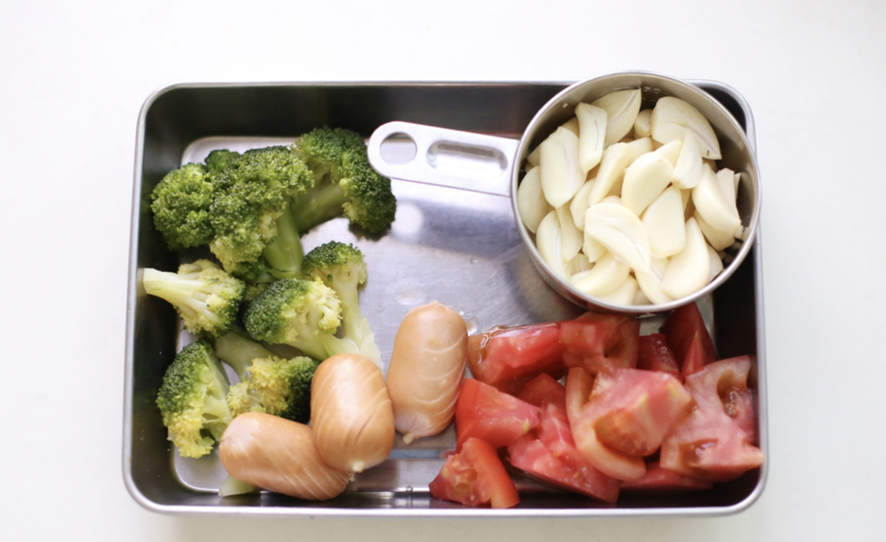
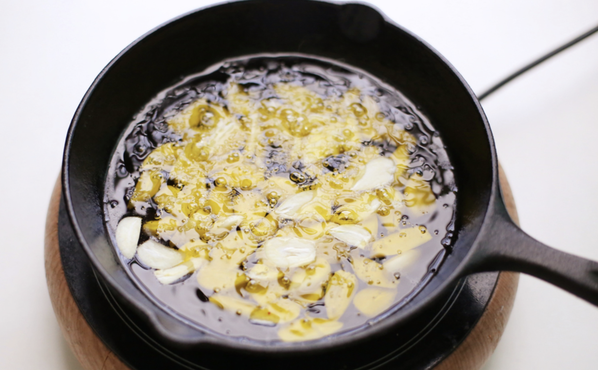
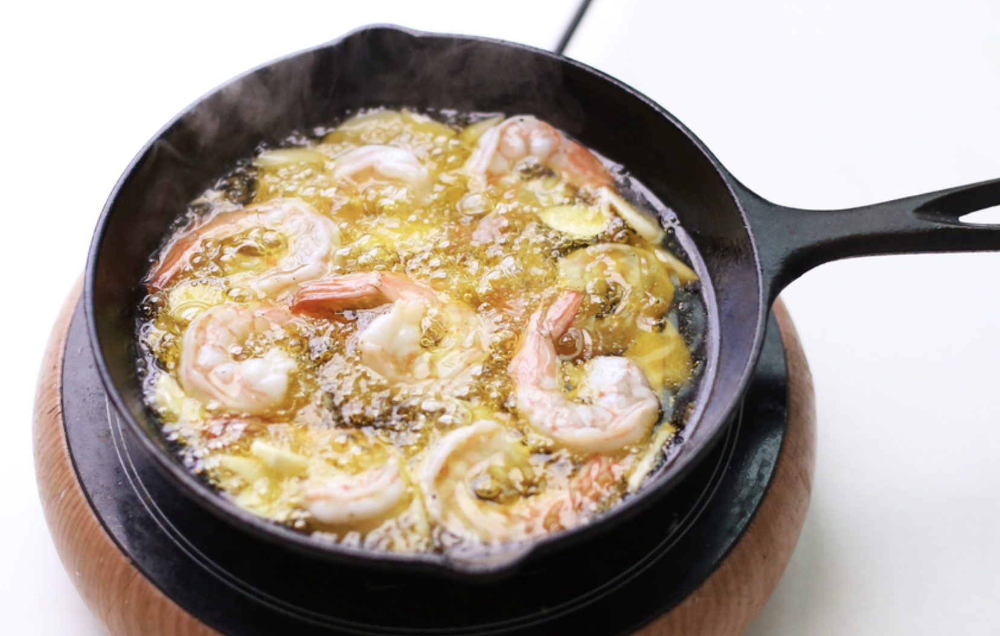
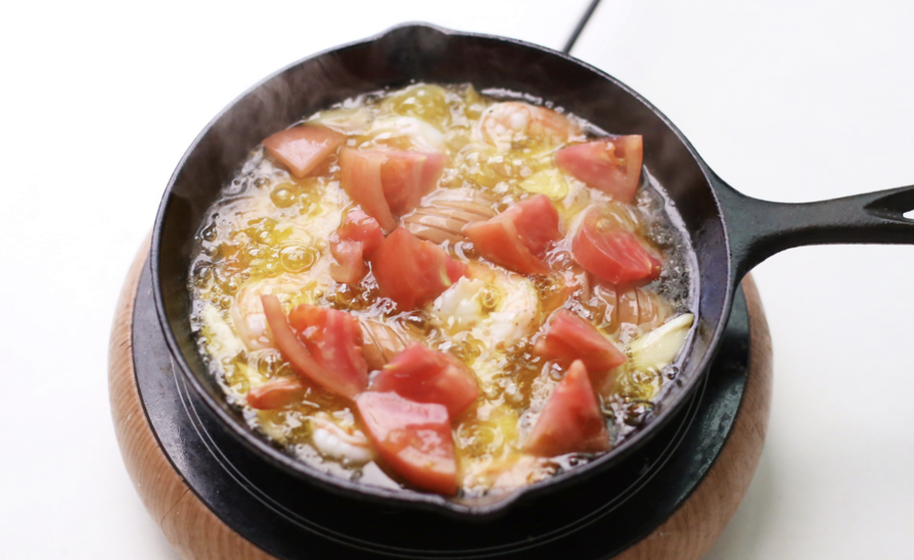
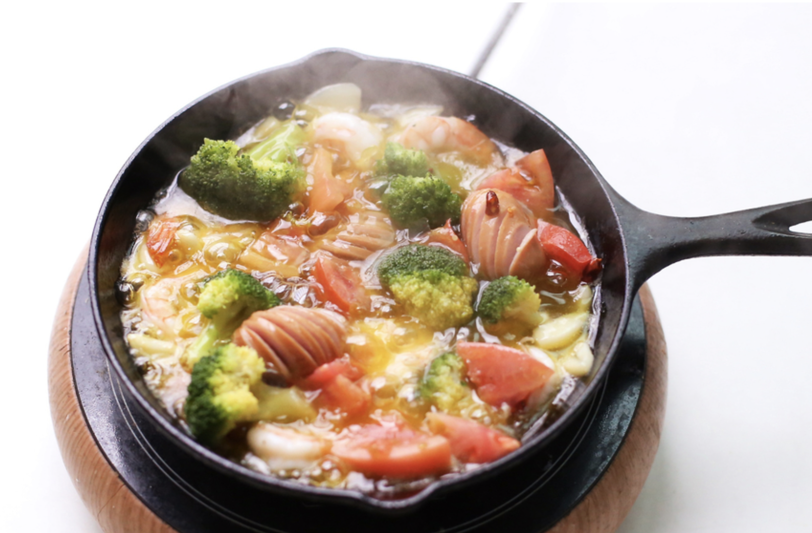

요리법
1)요리재료
재료 : 새우 8마리(+밑간 : 소금 3~4꼬집, 통후추 갈아서), 통마늘 3/4컵, 토마토 1/2개, 비엔나소시지 3개, 데친 브로콜리 1/4송이, 올리브유 200ml, 페퍼론치노 5개, 치킨스톡 0.5개, 소금 3~4꼬집, 오레가노 허브 가루 약간, 바질 허브가루 약간, 통후추 갈아서, 생 바질잎 조금
2)기본정보
조리시간 : 15분 내외
분량 : 2인분 기준
칼로리 : 124kcal
3)요리과정

01. 새우를 밑간해두고 각 재료들을 손질한다.

02. 올리브오일과 편마늘을 넣고 불을 약불로 한채 조리한다.

03. 기름이 자글자글 끓기 시작하면 새우를 넣는다.(팬 높이 가 낮으면 새우를 뒤집어서 골고루 익힌다.)

04. 새우가 빨갛게 익으면 비엔나소시지를 넣고 비엔나 소시지 칼집이 벌어지면 토마토를 넣는다. 페퍼론치노를 기호에 맞게 추가한다.

05. 데친 브로콜리를 넣고 살짝 끓이다 치킨스톡을 골고루 뿌려주고 소금을 조금 뿌려서 간을 맞춰준다.

06. 불을 끄고 바질과 오레가노 허브가루를 뿌리고 통후추를 갈아뿌린다. 마무리로 생바질잎을 올려준다.